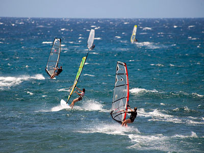
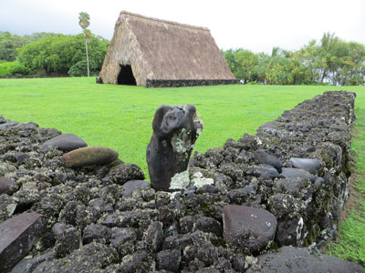
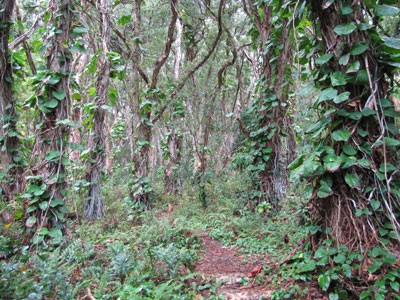
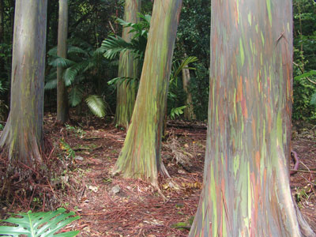
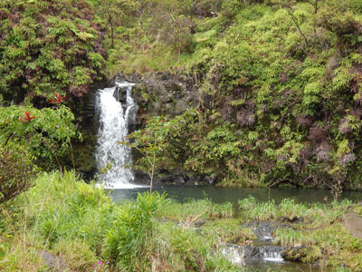
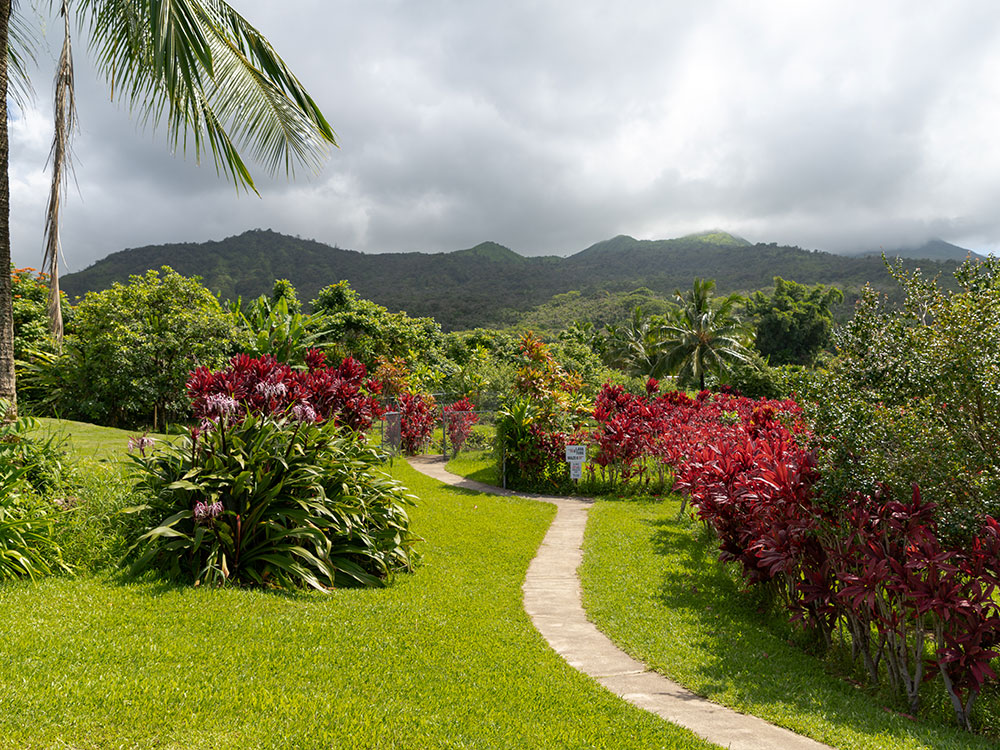
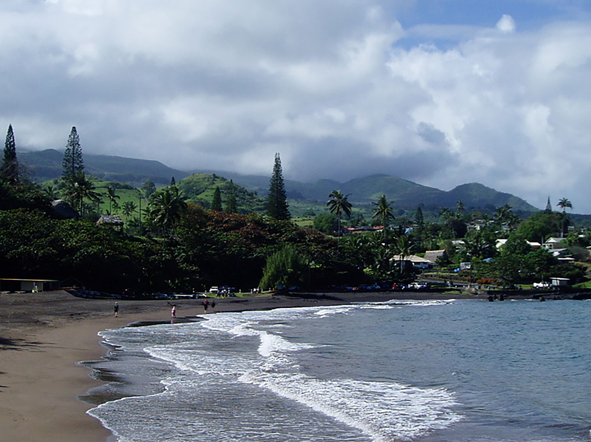

Remote coastal village surrounded by tropical rainforest, waterfalls, and black sand beaches, accessible by a winding scenic highway.
Places to See in Hana

Christopher Michel, CC BY 2.0, via Wikimedia Commons; Image Size Adjusted
.jpg){kind=link}
Ho'okipa
Windswept shoreline renowned for its powerful surf, vibrant marine life, and dramatic cliffside views that attract surfers, sunbathers, and wildlife watchers alike.

Joel Bradshaw, CC0, via Wikimedia Commons; Image Size Adjusted

Kahanu Garden
122-acre botanical preserve featuring rare native Hawaiian plants, Polynesian-introduced species, and the largest ancient temple in Hawaii, all set along a rugged coastal rainforest.

Forest & Kim Starr, CC BY 3.0 US, via Wikimedia Commons; Image Size Adjusted
.jpg){kind=link}
Kaumahina State Wayside Park
Forested coastal overlook offering picnic areas, loop trails, and panoramic views of the northeast shoreline and Ke‘anae Peninsula.

Janine Sprout, CC BY 4.0, via Wikimedia Commons; Image Size Adjusted

Ke'anae Arboretum
Six-acre botanical garden featuring native and exotic plants, including rainbow eucalyptus trees, along a streamside trail through historic taro terraces.

Forest & Kim Starr, CC BY 3.0 US, via Wikimedia Commons; Image Size Adjusted
.jpg){kind=link}
Pua'a Ka'a State Wayside Park
Lush rainforest rest stop featuring short trails to waterfalls, picnic areas, and pools ideal for a refreshing dip during a scenic drive.

Jet Lowe, Public domain, via Wikimedia Commons; Image Size Adjusted
.jpg){kind=link}
Hana Highway / Road to Hana
Scenic coastal highway winding through rainforests, waterfalls, and dramatic cliffs, offering one of the most iconic and adventurous drives in Hawaii.

Theskuj, CC BY-SA 4.0, via Wikimedia Commons; Image Size Adjusted

Wai'anapanapa State Park
Remote volcanic coastline featuring a black sand beach, lava tubes, sea arches, and native hala forest, offering a dramatic and culturally rich natural experience.
Overview
Hana is a small, remote community of about 1,200 people on Maui's eastern coast, known as the destination at the end of the winding Road to Hana (Hana Highway). The 52-mile drive from Kahului has more than 600 curves and dozens of one-lane bridges, passing rainforest, waterfalls and black sand beaches. The town itself is quiet, with a few shops and restaurants.
Visitors come to Hana for the drive and for its slow pace, as well as for beaches, gardens and Haleakala National Park's Kipahulu district, home to the Pools of Oheo and the bamboo forest trail. It is one of the least developed parts of Hawaii, and many travelers stay overnight to enjoy the area without the rush.
History
Polynesians settled the area long ago, and Hana was the birthplace of Queen Kaahumanu and an important chiefly district. Sugar plantations operated from the 1850s until 1946, and Paul Fagan's cattle ranch and the Hotel Hana-Maui, now the Travaasa Hana, followed in the 1940s. The Hana Highway was completed in 1926, giving the town its first road access.
Sightseeing and Popular Landmarks
Along the Road to Hana, popular stops include Keanae Arboretum, the Keanae Peninsula, Waianapanapa State Park with its black sand beach, and Kahanu Garden. Beyond Hana, Oheo Gulch and the Pipiwai Trail to Waimoku Falls are the main attractions.
Culture and Museums
The Hana Cultural Center and Museum displays Hawaiian artifacts and local history, and Kahanu Garden has the huge Piilanihale Heiau, the largest ancient temple platform in Hawaii. Hasegawa General Store, a long-running local landmark, and the historic Wananalua Congregational Church add to the town's character.
Parks
Kipahulu, part of Haleakala National Park, has waterfalls and pools, and Waianapanapa State Park has caves and coastal trails. Hana Bay Beach Park and Hamoa Beach are popular for swimming and bodysurfing, and Hookipa Beach Park near Paia is a well-known surfing and windsurfing spot at the start of the road.
Seasons and Weather
Hana has a tropical rainforest climate, with highs in the upper 70s to low 80s°F and plenty of rain, around 70 inches a year in town and much more in the mountains. Winter is wetter, and heavy rain can cause flash floods and road closures, so check conditions before driving the highway.
This article uses material from Wikipedia as well as information from official tourism and institutional sources. Key references include Hawaii Tourism Authority, Haleakala National Park, Hawaii Department of Land and Natural Resources, and National Weather Service Honolulu. Wikipedia material is from the article "Hana, Hawaii", released under the Creative Commons Attribution-Share-Alike License 3.0.

.jpg){kind=link}
